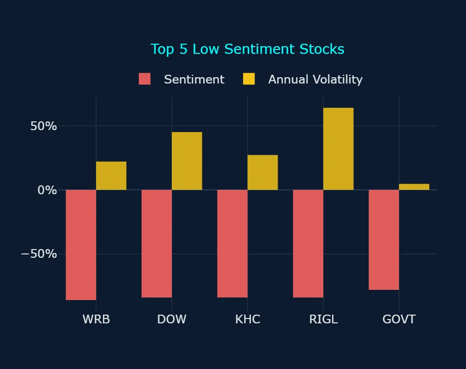
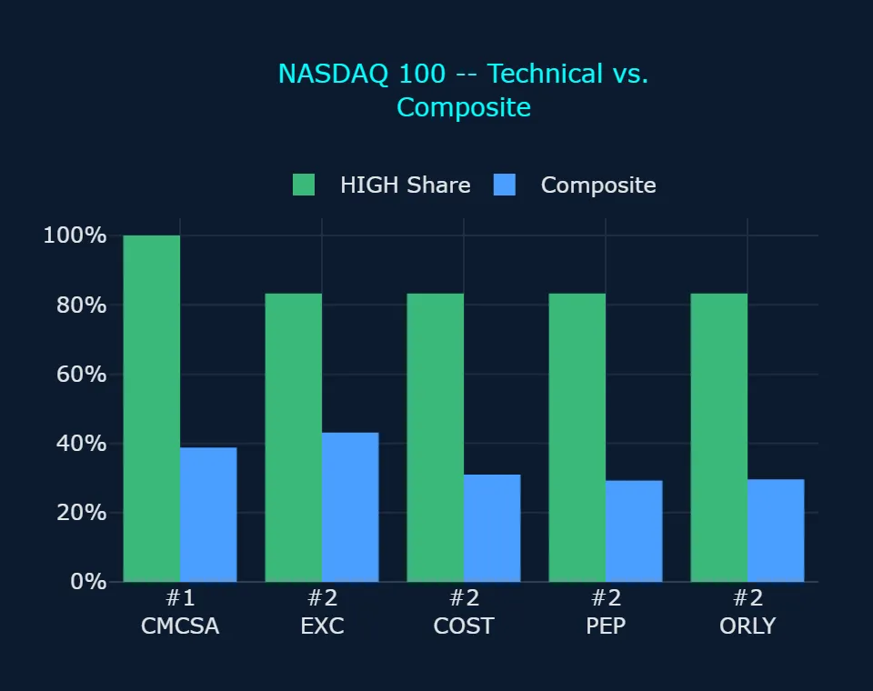

Zoonova AI: Midday Market Report – November 18, 2026
Session Quantitative Briefing: The Zoonova AI Intelligence Engine executes a hybrid architecture combining a proprietary Quad-Ensemble machine learning framework with Google Gemini Flash for real-time contextual synthesis and semantic macroeconomic grounding. The quantitative pipeline integrates four specialized estimators: Random Forest Regressor (RFR) for baseline structural stability, eXtreme Gradient Boosting (XGB) optimized for residual loss minimization, Categorical Boosting (CAT) for high-cardinality categorical signal processing, and Temporal Fusion Transformer (TFT) for multi-horizon price and volatility forecasting.
Zoonova AI: Midday Momentum & Liquidity Report
1. QUANTITATIVE MODEL OVERVIEW & SIGNAL METRICS
Zoonova integrates a Quad-Ensemble machine learning framework comprising Random Forest Regressor [RFR], eXtreme Gradient Boosting [XGB], Categorical Boosting [CAT], and Temporal Fusion Transformer [TFT] architectures to project price trajectories and benchmark-relative alpha probabilities. Market sentiment scoring is generated via VADER text processing, while BIRCH clustering classifies multi-timeframe price anomalies and macro regime shifts.
- Benchmark sentiment exhibits broad consolidation, with SPY (ETF) trading at $733.3714 as of 14:10 ET (Live quote, 2026-11-18) accompanied by negative sentiment of -44.0% and annualized volatility of 16.93% (Zoonova, 2026-11-17), alongside projected price targets reaching $808.64 by 2027-11-09.
- Technology bellwether QQQ (ETF) was trading at $656.95 as of 14:10 ET (Live quote, 2026-11-18) with sentiment of -44.0% and annualized volatility of 22.68% (Zoonova, 2026-11-17), with 1-year model targets projecting an advance to $716.07 by 2027-11-09.
- Industrial and blue-chip equities face sentiment softness, with DIA (ETF) trading at $502.35 as of 14:10 ET (Live quote, 2026-11-18) under sentiment of -68.0% and annualized volatility of 15.26% (Zoonova, 2026-11-17), pointing toward $540.03 by 2027-11-09.
- Defensive asset classes reflect relative resilience, as BND (ETF) was trading at $70.865 as of 14:10 ET with sentiment of +23.0% and annualized volatility of 4.42%, while GLD (ETF) was trading at $352.48 as of 14:10 ET (Live quote, 2026-11-18) supported by strong sentiment of +84.0% and annualized volatility of 24.77% (Zoonova, 2026-11-17).
- Anomaly detection indicates a pronounced defensive skew across individual equities, registering 20 bearish anomalies (1 stock of moderate severity and 19 stocks of low severity) against only 4 low-severity bullish anomalies (Zoonova, 2026-11-17).
2. SENTIMENT INSIGHTS – TOP 5 HIGH & LOW
Top 5 High Sentiment Stocks
| Ticker | Company Name | Sentiment Score | Primary Catalyst / Driver |
|---|---|---|---|
| TMUS | T-Mobile US Inc | +99.0% | Sentiment reached +99.0% as T-Mobile launched nationwide AI-powered network optimization tools AutoPilot and Dynamic CX while raising full-year financial guidance (Accesswire, 2026-11-18). |
| NRG | NRG Energy Inc. | +98.0% | Sentiment surged to +98.0% following a definitive agreement to divest six natural gas generation facilities to LS Power for $4 billion in cash to fund share repurchases and debt reduction (Utility Dive, 2026-11-16). |
| LH | Labcorp Holdings Inc. | +96.0% | Sentiment advanced to +96.0% after Labcorp announced a strategic collaboration with Grupo Fleury to expand clinical trial kit assembly and laboratory operations in Brazil (PR Newswire, 2026-11-17). |
| PYPL | PayPal Holdings Inc | +96.0% | Sentiment printed at +96.0% as PayPal expanded into AI-driven checkout by joining Visa's Agentic Ready program alongside launching new Venmo bill-splitting automation (PYMNTS, 2026-11-18). |
| WTW | Willis Towers Watson Public Limited Co | +96.0% | Sentiment registered at +96.0% driven by the rollout of upgraded Climate Diagnostic risk modeling tools and integrated agentic AI capabilities for life insurance modeling (WTW, 2026-11-11). |
Top 5 Low Sentiment Stocks
| Ticker | Company Name | Sentiment Score | Primary Friction / Risk Factor |
|---|---|---|---|
| AJG | Arthur J. Gallagher & Co. | -98.0% | Sentiment fell to -98.0% due to margin headwinds and operational integration challenges following aggressive international brokerage acquisitions amid softening commercial rate trends (Reinsurance News, 2026-10-30). |
| TRV | Travelers Companies Inc. | -98.0% | Sentiment dropped to -98.0% as concerns over severe natural catastrophe exposure and weather-related claim severity weighed on underwriting outlooks despite disciplined pricing (Morningstar, 2026-11-17). |
| V | Visa Inc | -96.0% | Sentiment fell to -96.0% as legal overhangs persisted following a federal judge's rejection of Visa's motion to dismiss the Justice Department's debit card antitrust lawsuit alongside ongoing merchant swipe-fee litigation (Admiral Markets, 2026-11-17). |
| HALO | Halozyme Therapeutics Inc. | -91.0% | Sentiment declined to -91.0% following executive stock sales and investor scrutiny over long-term European intellectual property litigation despite strong third-quarter royalty growth (Investing.com, 2026-11-17). |
| KLAC | KLA Corp. | -90.0% | Sentiment dropped to -90.0% amid synchronized semiconductor capital equipment profit-taking and investor caution regarding near-term wafer fabrication tool delivery pushouts (TradingView, 2026-11-17). |
3. ALPHA PROBABILITY & PRICE DELTA LEADERBOARD – 1-YEAR HORIZON
S&P 500 – Top 5 High Alpha Probability (1yr)
| Ticker | Last 14:10 ET ($) | 1-Yr Target Price ($) | Alpha Probability (%) | Implied Excess Alpha (%) | 10%+ Alpha? |
|---|---|---|---|---|---|
| FISV | $61.18 | $74.86 | 67.57% | 9.73% | Split |
| CSGP | $30.59 | $36.78 | 58.30% | 9.85% | Split |
| CPRT | $31.63 | $34.69 | 53.52% | -0.08% | Split |
| LEN | $82.34 | $94.84 | 44.25% | 4.78% | Both No |
| BSX | $43.77 | $47.78 | 43.21% | 0.64% | Both No |
S&P 500 – Top 5 Price Delta + % Change (1yr)
| Ticker | Last 14:10 ET ($) | 1-Yr Target Price ($) | Absolute Delta ($) | Projected 1-Yr % Change (%) | Implied Excess Alpha (%) |
|---|---|---|---|---|---|
| FIS | $27.47 | $36.69 | $9.22 | 33.56% | 23.16% |
| KLAC | $144.22 | $186.76 | $42.54 | 29.50% | 18.78% |
| MPWR | $1,317.37 | $1,679.48 | $362.11 | 27.49% | 17.09% |
| MCHP | $59.43 | $75.47 | $16.04 | 26.99% | 16.58% |
| LRCX | $210.47 | $266.38 | $55.91 | 26.56% | 16.02% |
NASDAQ 100 – Top 5 High Alpha Probability (1yr)
| Ticker | Last 14:10 ET ($) | 1-Yr Target Price ($) | Alpha Probability (%) | Implied Excess Alpha (%) | 10%+ Alpha? |
|---|---|---|---|---|---|
| CPRT | $31.63 | $34.69 | 53.52% | -0.08% | Split |
| DXCM | $81.61 | $91.89 | 27.30% | 1.60% | Both No |
| NFLX | $60.75 | $65.99 | 23.39% | 0.18% | Both No |
| MRNA | $204.39 | $227.15 | 21.33% | -0.56% | Both No |
| MRVL | $144.96 | $173.22 | 19.44% | 6.05% | Both No |
NASDAQ 100 – Top 5 Price Delta + % Change (1yr)
| Ticker | Last 14:10 ET ($) | 1-Yr Target Price ($) | Absolute Delta ($) | Projected 1-Yr % Change (%) | Implied Excess Alpha (%) |
|---|---|---|---|---|---|
| KLAC | $144.22 | $186.76 | $42.54 | 29.50% | 18.78% |
| MCHP | $59.43 | $75.47 | $16.04 | 26.99% | 16.58% |
| LRCX | $210.47 | $266.38 | $55.91 | 26.56% | 16.02% |
| AMD | $508.60 | $633.00 | $124.40 | 24.46% | 15.34% |
| INTC | $53.92 | $66.97 | $13.05 | 24.20% | 10.98% |
Prices: 2026-11-18 live-search quotes (14:10 ET) for 39 of 39 priced tickers (39 last trade); a price marked (prev) is the 2026-11-17 close. Live quotes are unofficial until the official closes load the next morning. ML targets and alpha are from the 2026-11-17 close.
4. REAL-TIME CONTEXTUAL ENRICHMENT
U.S. equity markets on 2026-11-18 continue to exhibit sector rotation away from high-multiple cyclical growth toward cash-flow-generative defensives and restructuring plays. Broader indices show consolidative price action, with SPY (ETF) trading at $733.3714 as of 14:10 ET (Live quote, 2026-11-18) against negative sentiment of -44.0%, and QQQ (ETF) trading at $656.95 as of 14:10 ET (Live quote, 2026-11-18) with matching sentiment of -44.0% (Zoonova, 2026-11-17). In contrast, fixed income and precious metals exhibit steady capital inflows, with BND (ETF) trading at $70.865 as of 14:10 ET and GLD (ETF) trading at $352.48 as of 14:10 ET (Live quote, 2026-11-18), where gold is supported by an elevated sentiment score of +84.0% (Zoonova, 2026-11-17).
Corporate catalysts highlight divergent momentum between restructuring beneficiaries and legacy technology leaders. Fiserv, Inc. was trading at $61.18 as of 14:10 ET (Live quote, 2026-11-18) following an expanded $1 billion operational savings plan and early share repurchases (TIKR, 2026-11-10); however, the two models disagree on its 10%+ alpha potential, as the probability model assigns a 67.57% chance of beating the benchmark by 10%+ while the price model projects 1-year alpha of 9.73% (Zoonova, 2026-11-17). Similarly, CoStar Group, Inc. was trading at $30.59 as of 14:10 ET (Live quote, 2026-11-18) after raising full-year EBITDA guidance via $200 million in cost efficiencies (The Motley Fool, 2026-11-11), where the two models split with a 58.30% alpha probability and 9.85% projected 1-year alpha (Zoonova, 2026-11-17). Copart, Inc. was trading at $31.63 as of 14:10 ET (Live quote, 2026-11-18) ahead of its fiscal first-quarter earnings release (Business Wire, 2026-11-17), with models splitting between a 53.52% alpha probability and a -0.08% projected 1-year alpha (Zoonova, 2026-11-17). For Lennar Corp. (trading at $82.34 as of 14:10 ET) and Boston Scientific Corp. (trading at $43.77 as of 14:10 ET), neither model expects 10%+ outperformance, showing alpha probabilities of 44.25% and 43.21% alongside 1-year alpha projections of 4.78% and 0.64%, respectively (Zoonova, 2026-11-17).
Market breadth and anomaly indicators confirm a cautious underlying regime. The BIRCH clustering engine flagged 20 bearish anomalies across equities, including moderate severity in Omeros Corporation alongside 19 low-severity flags such as Salesforce Inc and Moderna Inc, while only 4 stocks registered low-severity bullish anomalies (Zoonova, 2026-11-17). Semiconductor equipment providers face localized pressure, as KLA Corp. was trading at $144.22 as of 14:10 ET (Live quote, 2026-11-18) under sentiment of -90.0% amid fab tool pacing re-evaluations (TradingView, 2026-11-17). Within the Tech Stock Scorecard, Intel Corp. holds the top Composite score at 49.4, supported by a Macro Alignment of 86.7 and a Sentiment Rating of 68.0, whereas mega-cap names Apple Inc (Composite 26.9) and Microsoft Corporation (Composite 27.0) rank at the bottom of the Tech Stock Scorecard due to muted short-term Macro Alignment scores of 3.5 and 2.7, respectively (Zoonova, 2026-11-17).
5. ANOMALY DETECTION SCANNER
Direction: Bearish
Moderate Severity (1 stock)
- OMER – Omeros Corporation: Bearish Short-Term (3d) Trend Anomaly, Bearish Long-Term (1w) Trend Anomaly
Low Severity (19 stocks)
- CRM – Salesforce Inc: Bearish Short-Term (3d) Trend Anomaly
- HOOD – Robinhood Markets Inc: Bearish Long-Term (1w) Trend Anomaly
- IBM – International Business Machines Corp.: Bearish Short-Term (3d) Trend Anomaly
- ICE – Intercontinental Exchange Inc: Bearish Short-Term (3d) Trend Anomaly
- IDYA – Ideaya Biosciences Inc: Bearish Short-Term (3d) Trend Anomaly
- KOD – Kodiak Sciences Inc: Bearish Short-Term (3d) Trend Anomaly
- LGND – Ligand Pharmaceuticals, Inc.: Bearish Long-Term (1w) Trend Anomaly
- MCO – Moody`s Corp.: Bearish Short-Term (3d) Trend Anomaly
- MRNA – Moderna Inc: Bearish Long-Term (1w) Trend Anomaly
- NTRA – Natera Inc: Bearish Long-Term (1w) Trend Anomaly
- OVID – Ovid Therapeutics Inc: Bearish Long-Term (1w) Trend Anomaly
- PBYI – Puma Biotechnology Inc: Bearish Long-Term (1w) Trend Anomaly
- PTGX – Protagonist Therapeutics Inc: Bearish Long-Term (1w) Trend Anomaly
- ROST – Ross Stores, Inc.: Bearish Long-Term (1w) Trend Anomaly
- RVMD – Revolution Medicines Inc: Bearish Long-Term (1w) Trend Anomaly
- TPR – Tapestry Inc: Bearish Short-Term (3d) Trend Anomaly
- TTWO – Take-Two Interactive Software, Inc.: Bearish Long-Term (1w) Trend Anomaly
- VIR – Vir Biotechnology Inc: Bearish Long-Term (1w) Trend Anomaly
- ZYME – Zymeworks BC Inc: Bearish Long-Term (1w) Trend Anomaly
Direction: Bullish
Low Severity (4 stocks)
- ESLT – Elbit Systems Ltd.: Bullish Short-Term (3d) Trend Anomaly
- PZG – Paramount Gold Nevada Corp: Bullish Short-Term (3d) Trend Anomaly
- RYTM – Rhythm Pharmaceuticals Inc.: Bullish Short-Term (3d) Trend Anomaly
- URGN – UroGen Pharma Ltd: Bullish Long-Term (1w) Trend Anomaly
6. STRATEGIC INVESTMENT ASSESSMENT
- Adopt a balanced tactical allocation between broad equities and defensive anchors, maintaining core exposure in fixed income and precious metals as BND (ETF) and GLD (ETF) demonstrate stable volatility profiles and positive sentiment.
- Prioritize idiosyncratic, high-composite selections from the Main Scorecard where restructuring catalysts and margin expansion support valuation, led by CoStar Group, Inc. (Composite 74.6) and Fiserv, Inc. (Composite 67.1).
- Exercise selective positioning in mega-cap technology and semiconductor capital equipment, favoring higher macro-aligned turnaround names on the Tech Stock Scorecard such as Intel Corp. (Composite 49.4) over bottom-ranked Apple Inc (Composite 26.9) and Microsoft Corporation (Composite 27.0).
- Incorporate heightened risk management parameters and trailing stop disciplines across cyclical holdings given the asymmetric anomaly distribution of 20 bearish flags versus only 4 bullish flags registered across coverage.
7. STOCK SCORECARD
Main Scorecard
| Ticker | Composite (%) | Alpha Rating | 10%+ Alpha? | Projected 1-Yr Change (%) | Street Consensus (Upside) | Next Earnings | Sentiment Rating | Technical Signal | Macro Alignment | Anomaly Flag | Catalyst / Risk | Market Cap | EPS Revisions (30d) | Short Interest / DTC | Options Flow | Earnings Surprise (4Q) | Bias |
|---|---|---|---|---|---|---|---|---|---|---|---|---|---|---|---|---|---|
| CSGP | 74.6% | 69.5 | Split | +20.2% | Buy (+14.8%) | 2027-01-26 | 97.5 | 50.0 | 84.3 | None | Commercial Real Estate Recovery | $12.6B | Upward (+4.2%) | 3.1% / 1.7 DTC | Neutral / Mixed | 3/4 Beats | Bullish |
| FISV | 67.1% | 80.5 | Split | +22.4% | Buy (+1.9%) | 2027-02-09 | 55.0 | 50.0 | 83.6 | None | Share Buyback Expansion | $33.9B | Upward (+2.8%) | 4.6% / 2.5 DTC | Bullish (Call Skew) | 3/4 Beats | Bullish |
| PZG | 64.8% | 34.9 | Split | +26.0% | N/A | 2027-02-12 | 70.0 | 75.0 | 90.4 | Bullish (3d) | Permit Approval Progress | $78.8M | N/A (Pre-Revenue) | 1.2% / 1.5 DTC | Neutral / Mixed | N/A (No Coverage) | Neutral |
| NRG | 61.9% | 27.7 | Both No | +17.1% | Buy (+71.4%) | 2027-02-08 | 99.0 | 50.0 | 81.6 | None | Power Demand Surge | $19.3B | Upward (+5.1%) | 4.8% / 3.2 DTC | Bullish (Call Skew) | 3/4 Beats | Neutral |
| LEN | 58.8% | 52.7 | Both No | +15.2% | Sell (+8.4%) | 2026-12-15 (in 27d) | 65.0 | 50.0 | 71.0 | None | Housing Margin Pressure | $19.5B | Downward (-5.7%) | 4.2% / 3.5 DTC | Bearish (Put Heavy) | 1/4 Beats | Neutral |
| FIS | 58.2% | 49.6 | Split | +33.6% | Hold (+41.3%) | 2027-02-10 | 50.0 | 50.0 | 91.7 | None | Cybersecurity Cost Pressure | $14.2B | Downward (-4.1%) | 4.1% / 3.6 DTC | Neutral / Mixed | 3/4 Beats | Neutral |
| ESLT | 56.3% | 35.0 | Both No | +13.4% | Buy (+20.9%) | 2027-03-24 | 56.5 | 75.0 | 64.9 | Bullish (3d) | European Defense Contracts | $33.9B | Upward (+6.8%) | 0.8% / 1.9 DTC | Bullish (Call Skew) | 4/4 Beats (+6.5% avg) | Neutral |
| URGN | 55.4% | 9.2 | Both No | +26.2% | Strong Buy (+88.5%) | 2027-03-11 | 69.5 | 75.0 | 82.7 | Bullish (1w) | Zusduri Commercial Ramp | $1.4B | Downward (-2.5%) | 8.4% / 4.1 DTC | Neutral / Mixed | 2/4 Beats | Neutral |
| CPRT | 54.0% | 63.8 | Split | +9.7% | Buy (+19.8%) | 2026-12-01 (in 13d) | 50.0 | 50.0 | 49.1 | None | Acv Auctions Integration | $29.1B | Downward (-1.8%) | 4.5% / 3.1 DTC | Neutral / Mixed | 3/4 Beats | Neutral |
| TMUS | 53.7% | 11.8 | Both No | +13.1% | Buy (+10.2%) | 2027-01-27 | 99.5 | 50.0 | 63.9 | None | Broadband Subscriber Growth | $174.1B | Upward (+3.4%) | 1.5% / 2.2 DTC | Bullish (Call Skew) | 4/4 Beats (+4.8% avg) | Neutral |
| MPWR | 49.9% | 22.1 | Split | +27.5% | Buy (+35.4%) | 2027-01-28 | 50.0 | 50.0 | 91.2 | None | Enterprise Data Growth | $64.2B | Upward (+4.9%) | 3.6% / 2.8 DTC | Bullish (Call Skew) | 4/4 Beats (+5.5% avg) | Neutral |
| PYPL | 49.6% | 6.3 | Both No | +9.7% | Hold (+16.4%) | 2027-02-04 | 98.0 | 50.0 | 53.7 | None | Checkout Margin Stabilization | $48.2B | Upward (+1.2%) | 3.3% / 2.4 DTC | Neutral / Mixed | 3/4 Beats | Neutral |
| BSX | 49.4% | 51.5 | Both No | +9.2% | Buy (+40.3%) | 2027-01-27 | 42.5 | 50.0 | 54.1 | None | Electrophysiology Device Adoption | $62.4B | Downward (-2.1%) | 1.8% / 2.1 DTC | Neutral / Mixed | 3/4 Beats | Neutral |
| INTC | 49.4% | 8.5 | Split | +24.2% | Hold (-10.1%) | 2027-01-28 | 68.0 | 50.0 | 86.7 | None | Azure Foundry Collaboration | $288.6B | Upward (+7.4%) | 2.8% / 2.0 DTC | Unusual Volume Detected | 2/4 Beats | Neutral |
| HOOD | 42.1% | 19.4 | Split | +9.9% | Buy (+61.9%) | 2027-02-16 | 50.0 | 25.0 | 87.5 | Bearish (1w) | Prediction Market Competition | $62.2B | Downward (-3.8%) | 4.5% / 1.7 DTC | Bearish (Put Heavy) | 3/4 Beats | Neutral |
| LRCX | 38.6% | 22.4 | Split | +26.6% | Buy (+16.4%) | 2027-01-27 | 5.0 | 50.0 | 90.6 | None | Wafer Fab Demand | $263.2B | Upward (+5.2%) | 2.1% / 1.9 DTC | Bullish (Call Skew) | 4/4 Beats (+6.1% avg) | Bearish |
| KLAC | 37.6% | 18.7 | Split | +29.5% | Buy (+28.6%) | 2027-01-28 | 5.0 | 50.0 | 91.4 | None | Process Control Equipment | $193.9B | Upward (+4.0%) | 1.7% / 1.6 DTC | Bullish (Call Skew) | 4/4 Beats (+5.8% avg) | Bearish |
| IDYA | 30.4% | 12.9 | Both No | +17.7% | Buy (+84.9%) | 2027-03-02 | 24.5 | 25.0 | 70.7 | Bearish (3d) | Darovasertib Pipeline Progress | $2.6B | Downward (-6.4%) | 12.5% / 16.5 DTC | Bearish (Put Heavy) | 2/4 Beats | Bearish |
| ZYME | 29.6% | 6.2 | Both No | +19.2% | Buy (+60.0%) | 2027-03-01 | 29.0 | 25.0 | 71.5 | Bearish (1w) | Share Repurchase Program | $1.8B | Downward (-4.5%) | 5.1% / 3.8 DTC | Neutral / Mixed | 2/4 Beats | Bearish |
| HALO | 29.3% | 6.8 | Both No | +14.2% | Hold (+12.7%) | 2027-02-17 | 4.5 | 50.0 | 68.1 | None | Subcutaneous Delivery Royalties | $10.9B | Neutral/Flat (0.0%) | 12.0% / 5.0 DTC | Neutral / Mixed | 3/4 Beats | Bearish |
10%+ Alpha? – whether Zoonova's two 1-year models (alpha probability and price target) expect the stock to beat the benchmark by 10%+. “Both No” is common: 10% is a high bar.
Tech Stock Scorecard
| Ticker | Composite (%) | Alpha Rating | 10%+ Alpha? | Projected 1-Yr Change (%) | Street Consensus (Upside) | Next Earnings | Sentiment Rating | Technical Signal | Macro Alignment | Anomaly Flag | Catalyst / Risk | Market Cap | EPS Revisions (30d) | Short Interest / DTC | Options Flow | Earnings Surprise (4Q) | Bias |
|---|---|---|---|---|---|---|---|---|---|---|---|---|---|---|---|---|---|
| INTC | 49.4% | 8.5 | Split | +24.2% | Hold (-10.1%) | 2027-01-28 | 68.0 | 50.0 | 86.7 | None | Azure Foundry Collaboration | $288.6B | Upward (+7.4%) | 2.8% / 2.0 DTC | Unusual Volume Detected | 2/4 Beats | Neutral |
| AMD | 44.0% | 3.3 | Split | +24.5% | Buy (+29.3%) | 2027-02-02 | 50.0 | 50.0 | 90.2 | None | Data Center Accelerators | $856.1B | Upward (+6.2%) | 2.3% / 1.7 DTC | Bullish (Call Skew) | 4/4 Beats (+4.3% avg) | Neutral |
| NVDA | 43.2% | 10.1 | Both No | +18.7% | Buy (+75.8%) | 2027-02-24 | 54.0 | 50.0 | 70.8 | None | Post Earnings AI Rally | $3.66T | Upward (+8.6%) | 1.2% / 1.4 DTC | Bullish (Call Skew) | 4/4 Beats (+7.2% avg) | Neutral |
| META | 39.6% | 2.4 | Both No | +11.3% | Buy (+35.4%) | 2027-01-20 | 65.0 | 50.0 | 50.6 | None | Prediction Market Expansion | $1.57T | Downward (-1.5%) | 1.2% / 1.6 DTC | Neutral / Mixed | 4/4 Beats (+5.1% avg) | Bearish |
| AMZN | 37.4% | 1.9 | Both No | +5.2% | Buy (+21.9%) | 2027-01-28 | 88.0 | 50.0 | 11.5 | None | Aws Cloud Acceleration | $2.84T | Upward (+4.2%) | 0.9% / 1.6 DTC | Bullish (Call Skew) | 3/4 Beats | Bearish |
| AVGO | 37.0% | 2.5 | Both No | +8.2% | Buy (+49.2%) | 2026-12-09 (in 21d) | 50.0 | 50.0 | 56.0 | None | Custom Asic Demand | $1.66T | Upward (+5.7%) | 1.4% / 1.8 DTC | Bullish (Call Skew) | 3/4 Beats | Bearish |
| TSLA | 31.4% | 3.5 | Both No | +10.6% | Buy (+6.9%) | 2027-02-03 | 23.0 | 50.0 | 60.4 | None | Cybercab Factory Expansion | $1.52T | Downward (-4.0%) | 2.0% / 1.7 DTC | Bullish (Call Skew) | 2/4 Beats | Bearish |
| GOOGL | 29.4% | 5.7 | Both No | +8.3% | Buy (+42.1%) | 2027-01-27 | 41.0 | 50.0 | 24.6 | None | Gemini Tasks Agents | $3.48T | Upward (+3.8%) | 0.8% / 1.3 DTC | Bullish (Call Skew) | 3/4 Beats | Bearish |
| MSFT | 27.0% | 4.9 | Both No | +6.7% | Buy (+26.1%) | 2027-01-26 | 50.0 | 50.0 | 2.7 | None | Custom Chip Production | $3.78T | Upward (+3.5%) | 0.9% / 1.5 DTC | Bullish (Call Skew) | 3/4 Beats | Bearish |
| AAPL | 26.9% | 3.9 | Both No | +6.5% | Buy (-1.3%) | 2027-02-01 | 50.0 | 50.0 | 3.5 | None | China Apple Intelligence | $5.13T | Upward (+2.1%) | 1.0% / 1.8 DTC | Neutral / Mixed | 3/4 Beats | Bearish |
| SPCX | N/H | N/H | N/A | N/A | Buy | 2027-02-17 | N/H | N/H | N/H | None | Starship Reusability Milestone | $1.95T | N/A (Recent IPO) | 4.6% / 1.2 DTC | Bullish (Call Skew) | 2/4 Beats | N/A |
N/H: no ML scores yet (insufficient trading history for the models).
Search-grounded columns (Street Consensus (Upside), Next Earnings, Catalyst / Risk, Market Cap, EPS Revisions (30d), Short Interest / DTC, Options Flow, Earnings Surprise (4Q)): MarketBeat, Zacks, Earnings Whispers, Stockopedia, Nasdaq, Finviz, Robinhood, Basis (sources dated 2026-10-28 to 2026-11-18).




Educational purposes only. Not investment advice.
Zoonova AI: Midday Technical Analysis Report
Defensive and media leaders sweep all six indicators HIGH, yet subdued macro alignment leaves most composites divergent.
1. 6 CORE INDICATORS
Indicator levels (LOW / MEDIUM / HIGH) and % Cluster come from Zoonova's BIRCH model (Balanced Iterative Reducing and Clustering using Hierarchies), an unsupervised machine-learning clustering model used for pattern recognition. Each indicator is clustered across the stock universe; % Cluster is the centroid of the cluster a stock falls in.
| Indicator | Category | Role |
|---|---|---|
| ARUPAroon Up | Trend Direction | Recency of the highest high in the lookback window; collapses in bear markets, so HIGH means price keeps printing fresh swing highs. |
| +DIPositive Directional Indicator | Trend Direction | Upward directional movement relative to true range; unlike ADX it collapses in sell-offs, so HIGH confirms buyer-driven expansion. |
| MFIMoney Flow Index | Volume / Inflow | Volume-weighted RSI from 0 to 100; falls as money leaves on down days, so HIGH means inflow on up days outweighs outflow. |
| CMFChaikin Money Flow | Volume / Inflow | Close location within the bar weighted by volume; plunges negative in liquidation, so HIGH confirms sustained buying into the top of daily ranges. |
| TSITrue Strength Index | Momentum | Double-smoothed momentum from -100 to +100; deeply negative in downtrends, so HIGH shows consistent multi-period upward thrust. |
| UOUltimate Oscillator | Momentum | Buying pressure across 7-, 14- and 28-period windows from 0 to 100; sinks when closes sit near the lows, so HIGH means buyers are in control on every timeframe. |
2. TECHNICAL REGIME
| Index | Universe | All HIGH (6/6) | Avg HIGH | Aroon Up HIGH | +DI HIGH | MFI HIGH | CMF HIGH | TSI HIGH | UO HIGH |
|---|---|---|---|---|---|---|---|---|---|
| S&P 500 | 424 | 20 | 1.8/6 | 109 | 153 | 82 | 196 | 139 | 65 |
| NASDAQ 100 | 71 | 3 | 1.3/6 | 16 | 20 | 8 | 27 | 17 | 6 |
In the S&P 500, 20 stocks with all indicators HIGH lift the average HIGH count to 1.8 across 424 members, anchored by CMF with a HIGH count per indicator of 196. By contrast, the NASDAQ 100 sees just 3 stocks with all indicators HIGH and an average HIGH count of 1.3 across 71 members, reflecting narrower upside participation.
3. TOP 5 BULLISH CONFLUENCE
Ranking: Rank = HIGH count (#1 = 6/6, #2 = 5/6, ...); within a rank, Sentiment (desc), then ticker. Sentiment only orders tickers within a rank; it is not a technical signal.
S&P 500 – Top 5 Bullish Confluence
| Rank | Ticker | Aroon Up | +DI | MFI | CMF | TSI | UO | HIGH | Sentiment |
|---|---|---|---|---|---|---|---|---|---|
| 1 | DPZ | HIGH 89.8% | HIGH 36.6% | HIGH 81.8% | HIGH 66.7% | HIGH 76.8% | HIGH 65.1% | 6/6 | +95.0% |
| 1 | AIZ | HIGH 89.8% | HIGH 36.6% | HIGH 81.8% | HIGH 66.7% | HIGH 76.8% | HIGH 65.1% | 6/6 | +88.0% |
| 1 | OMC | HIGH 89.8% | HIGH 36.6% | HIGH 81.8% | HIGH 66.7% | HIGH 76.8% | HIGH 65.1% | 6/6 | +88.0% |
| 1 | CHD | HIGH 89.8% | HIGH 36.6% | HIGH 81.8% | HIGH 66.7% | HIGH 76.8% | HIGH 65.1% | 6/6 | +85.0% |
| 1 | CMCSA | HIGH 89.8% | HIGH 36.6% | HIGH 81.8% | HIGH 66.7% | HIGH 76.8% | HIGH 65.1% | 6/6 | +85.0% |
S&P 500 – Signal Groups
| Rank | Ticker | Trend Direction | Volume / Inflow | Momentum |
|---|---|---|---|---|
| 1 | DPZ | 2 of 2 HIGH | 2 of 2 HIGH | 2 of 2 HIGH |
| 1 | AIZ | 2 of 2 HIGH | 2 of 2 HIGH | 2 of 2 HIGH |
| 1 | OMC | 2 of 2 HIGH | 2 of 2 HIGH | 2 of 2 HIGH |
| 1 | CHD | 2 of 2 HIGH | 2 of 2 HIGH | 2 of 2 HIGH |
| 1 | CMCSA | 2 of 2 HIGH | 2 of 2 HIGH | 2 of 2 HIGH |
NASDAQ 100 – Top 5 Bullish Confluence
| Rank | Ticker | Aroon Up | +DI | MFI | CMF | TSI | UO | HIGH | Sentiment |
|---|---|---|---|---|---|---|---|---|---|
| 1 | CMCSA | HIGH 89.8% | HIGH 36.6% | HIGH 81.8% | HIGH 66.7% | HIGH 76.8% | HIGH 65.1% | 6/6 | +85.0% |
| 1 | COST | HIGH 89.8% | HIGH 36.6% | HIGH 81.8% | HIGH 66.7% | HIGH 76.8% | HIGH 65.1% | 6/6 | +72.0% |
| 1 | ADP | HIGH 89.8% | HIGH 36.6% | HIGH 81.8% | HIGH 66.7% | HIGH 76.8% | HIGH 65.1% | 6/6 | -19.0% |
| 2 | PEP | HIGH 89.8% | HIGH 36.6% | HIGH 81.8% | HIGH 66.7% | HIGH 76.8% | MEDIUM 49.2% | 5/6 | +92.0% |
| 3 | MDLZ | HIGH 89.8% | HIGH 36.6% | HIGH 81.8% | MEDIUM 47.6% | HIGH 76.8% | MEDIUM 49.2% | 4/6 | +72.0% |
NASDAQ 100 – Signal Groups
| Rank | Ticker | Trend Direction | Volume / Inflow | Momentum |
|---|---|---|---|---|
| 1 | CMCSA | 2 of 2 HIGH | 2 of 2 HIGH | 2 of 2 HIGH |
| 1 | COST | 2 of 2 HIGH | 2 of 2 HIGH | 2 of 2 HIGH |
| 1 | ADP | 2 of 2 HIGH | 2 of 2 HIGH | 2 of 2 HIGH |
| 2 | PEP | 2 of 2 HIGH | 2 of 2 HIGH | 1 of 2 HIGH |
| 3 | MDLZ | 2 of 2 HIGH | 1 of 2 HIGH | 1 of 2 HIGH |
4. TICKER READS
S&P 500
- #1 DPZ – 6/6 HIGH, showing full alignment across Trend Direction, Volume / Inflow, and Momentum. Buying into the top of daily ranges is supported by CMF in the 66.7% cluster and Aroon Up in the 89.8% cluster as price keeps printing fresh swing highs. The setup carries a Divergent verdict because a subdued Macro Alignment of 4.5 limits the Composite to 39.3 despite a Sentiment Rating of 97.5. Watch: Sustained inflow required; watch for CMF or Aroon Up retreating from HIGH.
- #1 AIZ – 6/6 HIGH, with all three signal groups registering complete upside participation. Directional buyer expansion via +DI in the 36.6% cluster aligns with sustained multi-period momentum in TSI at the 76.8% cluster. The verdict is Divergent as a Macro Alignment of 8.7 and Alpha Rating of 1.3 hold the Composite down to 38.1. Watch: multi-period momentum easing if TSI falls below the HIGH cluster.
- #1 OMC – 6/6 HIGH, reflecting unanimous strength across Trend Direction, Volume / Inflow, and Momentum. Buyers maintain control across all timeframes with UO in the 65.1% cluster and net inflow highlighted by MFI in the 81.8% cluster. The profile remains Divergent, however, as an Alpha Rating of 0.9 restrains the Composite to 42.5. Watch: buying pressure to soften if UO drops from the HIGH cluster.
- #1 CHD – 6/6 HIGH, marked by strong buyer-driven expansion across all categories. Inflow on up days strongly outweighs outflow with MFI in the 81.8% cluster, while Aroon Up in the 89.8% cluster confirms consistent swing highs. The verdict is Divergent because a Macro Alignment of 17.1 and Alpha Rating of 0.9 limit the Composite to 39.3. Watch: capital accumulation to stall if MFI or CMF drops from HIGH.
- #1 CMCSA – 6/6 HIGH, achieving 2 of 2 HIGH marks in Trend Direction, Volume / Inflow, and Momentum. Persistent buying into intraday highs is affirmed by CMF in the 66.7% cluster alongside multi-period thrust in TSI at the 76.8% cluster. With a Macro Alignment of 52.6 and Alpha Rating of 12.6 lifting the Composite to 49.9, the verdict is Mixed. Watch: any breakdown in top-of-range accumulation if CMF slips from HIGH.
NASDAQ 100
- #1 CMCSA – 6/6 HIGH, achieving 2 of 2 HIGH marks in Trend Direction, Volume / Inflow, and Momentum. Persistent buying into intraday highs is affirmed by CMF in the 66.7% cluster alongside multi-period thrust in TSI at the 76.8% cluster. With a Macro Alignment of 52.6 and Alpha Rating of 12.6 lifting the Composite to 49.9, the verdict is Mixed. Watch: any breakdown in top-of-range accumulation if CMF slips from HIGH.
- #1 COST – 6/6 HIGH, capturing synchronized strength across Trend Direction, Volume / Inflow, and Momentum. Buying pressure spans all horizons with UO in the 65.1% cluster and +DI in the 36.6% cluster reflecting steady upward expansion. The reading yields a Divergent verdict due to a Macro Alignment of 29.2 and Alpha Rating of 1.7 that pull the Composite to 40.3. Watch: broad-timeframe buyer exhaustion if UO exits the HIGH cluster.
- #1 ADP – 6/6 HIGH, demonstrating clean technical breadth across Trend Direction, Volume / Inflow, and Momentum. Upside thrust is validated by TSI in the 76.8% cluster, while capital inflow dominates via MFI in the 81.8% cluster. The profile is sharply Divergent, penalized by a Sentiment Rating of 40.5, Alpha Rating of 0.9, and Macro Alignment of 10.7 that depress the Composite to 25.1. Watch: volume support to fade if MFI drops below the HIGH cluster.
- #2 PEP – 5/6 HIGH, led by Trend Direction 2 of 2 HIGH and Volume / Inflow 2 of 2 HIGH, while Momentum registers 1 of 2 HIGH. Fresh swing highs and top-of-range closes persist through Aroon Up in the 89.8% cluster and CMF in the 66.7% cluster, though UO sits at MEDIUM in the 49.2% cluster. The verdict is Divergent as a Macro Alignment of 21.8 and Alpha Rating of 1.8 limit the Composite to 41.4. Watch: UO advancing into HIGH to restore full momentum alignment.
- #3 MDLZ – 4/6 HIGH, featuring solid Trend Direction 2 of 2 HIGH alongside partial Volume / Inflow and Momentum readings of 1 of 2 HIGH. Buyer expansion remains steady with +DI in the 36.6% cluster and TSI in the 76.8% cluster, but CMF and UO rest at MEDIUM in the 47.6% and 49.2% clusters. With moderate indicators and a Composite of 38.3, the verdict is classified as Mixed. Watch: CMF and UO to reach HIGH to confirm broader inflow and momentum.
5. TECHNICAL VS. COMPOSITE MODEL CHECK
Composite is the Zoonova Scorecard (0-100), normalized across the full universe: 30% Alpha (1-year probability of beating the benchmark by 10%+), 25% Sentiment, 25% Technical (bullish minus bearish anomaly flags; 50 = none) and 20% Macro (1-year alpha percentile).
Verdict: Confirmed = strong technicals (HIGH share 75% or more) with Composite 55 or more; Divergent = one strong and the other weak (strong technicals with Composite below 45, or weak technicals, HIGH share below 50%, with Composite 55 or more); Weak = both weak; otherwise Mixed.
S&P 500 – Technical vs. Composite
| Rank | Ticker | HIGH | Composite | Verdict |
|---|---|---|---|---|
| 1 | DPZ | 6/6 | 39.3% | Divergent |
| 1 | AIZ | 6/6 | 38.1% | Divergent |
| 1 | OMC | 6/6 | 42.5% | Divergent |
| 1 | CHD | 6/6 | 39.3% | Divergent |
| 1 | CMCSA | 6/6 | 49.9% | Mixed |
NASDAQ 100 – Technical vs. Composite
| Rank | Ticker | HIGH | Composite | Verdict |
|---|---|---|---|---|
| 1 | CMCSA | 6/6 | 49.9% | Mixed |
| 1 | COST | 6/6 | 40.3% | Divergent |
| 1 | ADP | 6/6 | 25.1% | Divergent |
| 2 | PEP | 5/6 | 41.4% | Divergent |
| 3 | MDLZ | 4/6 | 38.3% | Mixed |
- DPZ: Dominos Pizza Inc displays unanimous 6/6 HIGH technical indicators, yet its Composite is restrained to 39.3 by a low Macro Alignment of 4.5 and Alpha Rating of 5.1.
- AIZ: Assurant Inc holds all 6 indicators at HIGH, but its Composite remains low at 38.1 due to an Alpha Rating of 1.3 and Macro Alignment of 8.7.
- OMC: Omnicom Group, Inc. achieves 6/6 HIGH technical metrics against a Composite of 42.5, curbed by an Alpha Rating of 0.9 and Macro Alignment of 31.3.
- CHD: Church & Dwight Co., Inc. pairs 6/6 HIGH technical strength with a Composite of 39.3, held back by an Alpha Rating of 0.9 and Macro Alignment of 17.1.
- COST: Costco Wholesale Corp carries a full 6/6 HIGH technical sweep, but a Macro Alignment of 29.2 and Alpha Rating of 1.7 pull its Composite to 40.3.
- ADP: Automatic Data Processing Inc. pairs 6/6 HIGH indicators with a severely depressed Composite of 25.1 driven by a negative Sentiment of -19.0% and Macro Alignment of 10.7.
- PEP: PepsiCo Inc shows 5/6 HIGH technical strength while a Macro Alignment of 21.8 and Alpha Rating of 1.8 keep its Composite down at 41.4.
6. TECHNICAL CONTEXT
- CHD – Church & Dwight entered an agreement to acquire a 45% stake in European hair care business BALI Treatment GmbH for approximately $225 million. (Business Wire, 2026-11-17)
- CMCSA – Comcast and Fastly unveiled a joint content delivery architecture to reduce latency during peak gaming download periods. (Seeking Alpha, 2026-11-18)
- ROST – Ross Stores registered a low-severity Bearish Long-Term (1w) Trend Anomaly, diverging from broader retail indicator strength seen in Costco Wholesale Corp. (Zoonova, 2026-11-17)
- TTWO – Take-Two Interactive Software registered a low-severity Bearish Long-Term (1w) Trend Anomaly amid Comcast gaming infrastructure expansion. (Zoonova, 2026-11-17)
7. TECHNICAL ASSESSMENT
Technical posture across ranked leaders remains exceptionally robust, characterized by clustered accumulation in money flow and persistent swing highs in trend indicators. However, widespread Divergent verdicts reflect persistent drag from Macro Alignment and Alpha Rating percentiles that keep composites restrained despite high technical counts. The primary technical risk centers on broader market weakness, where 1 moderate and 19 low-severity bearish trend anomalies registered across the scanner could eventually compromise top-of-range buying.



Educational purposes only. Not investment advice.